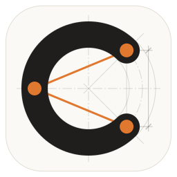

What the grey lines are
- Centre lines, long dash and dot, through the C's centre and running past it.
- The C's own centre line, a circle of radius 78, also dash-dot.
- The edges of its 38-wide stroke, circles of radius 59 and 97.
- The 45° rays through its ends, which set its opening.
- The control polygon's sides carried on past the points, as construction lines overshoot.
- The chord between the ends, with a dimension: extension lines, a dimension line and 45° ticks.